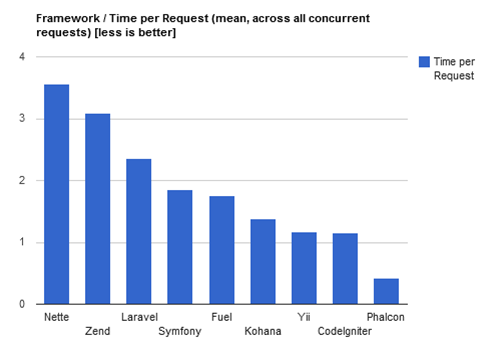

PHP, frameworks, Yii2


PHP is great!
- It is an excellent choice for web development.
- It is much more alive than others (81%!).
- It is pleasure to work with it proper framework is used.
PHP is getting simpler and improves
- Performance.
- Syntax.
- API for hashing passwords.
- Generators.
- Built-in webserver.
- And more...
And that's wonderful!
There are some bad things as well
- People getting tired and angry then leaving.
- Internal development infrastructure is quite old.
- Not that big PHP core team.
PHP needs you!
So what about frameworks?
Good things first
- Github is a new good PHP-code place.
- PSR-0 and Composer (thanks to php-fig).
- There are stable, supported and backwards compatible frameworks.

And now about not that good things…
Overcomplication
- ZF 2 and Symfony 2 are too flexible and complex.
- Even more than ZF1 and Symfony 1 were.
- Many people think it's the only right way.
All problems in computer science can be solved by another level of indirection... Except for the problem of too many layers of indirection.
David Wheeler
Why making things complex, if they can simple?
Making something simple is more complex, than just making it complex
What's the excuse for complexity?
- Everyone know patterns. When pattern names are in interfaces and methods it's all clear.
- Easier to test.
- What if it is decided to replace one DBMS to another? What if it is decided to replace HTTP to another thing? What if...
All that results in
- Misunderstanding, pattern addicts. Patterns are about how it's implemented but not why and what for it's done.
- Sometimes it's easier to test but significantly hader to do daily coding, debug and learn.
- Lots of layers. You can do dirty hack in tests once but you're working with framework API daily.
- Another side of the flexibility coin is complexity. Ultraflexibility rarely needed.
- You can not give routine stuff to less competent developers without spending significant time on teaching.
So are SF2 and ZF2 evil?
No. Just another niche.
SF2 and ZF2 aren't only about complexity
- Stable API.
- Well tested code.
- Backwards compatible releases.
- Warranty that framework will be supported for X next years.
- Good documentation.
- Commercial support, trainings (Yii doesn't have it yet).
- …?
So what should we do?
Choose a practical framework
- Without too much complexity.
- Easy to learn.
- Less magic.
- Less layers.
- Less configuration.
- Simple and usable API.

practical framework
Common framework myths
- Reinvented the wheel = bad.
- DI and cool patterns = good.
- Did X first = better than others.
- Loosly coupled = always better.
- Lacks feature X = bad.
Really important
- Easy to learn.
- Easy to debug and fix errors.
- Doesn't stand in your way.
- Friendly and active community.
- Backwards compatible and stable.
- Easy to configure and customize.
- You should like it ;)
 Prado, с 2004 → Yii 1.0, 2008 → Yii 1.1, 2010 → ;)
Prado, с 2004 → Yii 1.0, 2008 → Yii 1.1, 2010 → ;)
What is Yii?
- PHP5 MVC.
- Well balanced, stable and supported.
- DAO, AR, migrations.
- Caching.
- Forms.
- error handler, log.
- Code generator.
- I18n(CLDR).
- Widgets.
- BSD.
- Good docs and friendly community.
Docs are extremely important
- Document as you code.
- Primary docs are translated to 16 languages.
- Examples.
- Books.

Still the fastest PHP-framework*
*Except PECL and microframeworks
Performance
Measured by Phalcon team


setMyCoolFactoryDependencyInjectionContainer()
Yii is a practical framework
Now about Yii2

- https://github.com/yiisoft/yii2/ Composer required for now
- Docs draft
How it's different from 1.1?
- It is not backwards compatible with 1.1
- All the good ideas are still there. Architecture is different
Requirements
- PHP 5.3.7+
- mb_string
- PDO
- intl
Why not 5.4+?
- You can use 5.4 in your app.
- It's not required for framework itself.
- According to stats it's too early to adopt it.
namespaces
- All classes are now namespaced.
- No
C-prefixes. - PSR-0.
- Not so deep namespace nesting.
Base classes
\yii\base\Object— getters and setters,initmethod, configuring via array,Object::className().\yii\base\Component extends Object— event, behavior.
class GoogleMap extends \yii\base\Object
{
public function __construct($param1, $param2, $config = array())
{
// ...
parent::__construct($config);
}
public function init()
{
// ...
parent::init();
}
}
Creating an object
$object = \Yii::createObject(array(
'class' => '\app\components\GoogleMap',
'apiKey' => 'xyz',
'apiSecret' => 'cde',
), $param1, $param2);
Events
$component->on($eventName, $handler);
$component->off($eventName, $handler);
$component->trigger($eventName, Event $eventObject = null);
Global events:
// raising event
\Yii::$app->trigger($eventName);
// subscribing
\Yii::$app->on($eventName, $handler);
Cleanup
- Better class structure.
- Better naming.
- No more collections (there's SPL in 5.3).
View
Viewobject — data, assets,render.$thisin templates refers to view objects.$this->contextrefers to controller or widget.- Can be used in console apps.
- Themes (different from 1.1).
- Renderers (Smarty, Twig).
Widgets
use \yii\widgets\Menu;
// ...
echo Menu::widget(array(
'items' => $items,
));
ActiveForm
use yii\widgets\ActiveForm;
<?php $form = ActiveForm::begin(); ?>
<?php echo $form->field($model, 'username')->textInput(); ?>
<?php echo $form->field($model, 'password')->passwordInput(); ?>
<div class="form-actions">
<?php echo Html::submitButton('Login'); ?>
</div>
<?php ActiveForm::end(); ?>
Asset bundle
- Scripts are registered via packages (bundles).
- Solves script dependency problem.
- You can compress, combine and transform bundles using console command.
app\config\AppAsset::register($this);
Controller
return $this->render(...);- Console and web API is very alike.
- request and response.
- Filters are now behaviors.
Model
- Validator definition is separated from scenario definition.
- Mass assignment doesn't work without validation and scenarios.
Removed CFormModel since Model plays nice with forms. Forms are simpler.
AR, DAO, Query Builder, criteria
Consistent syntax for everything.
$query = new \yii\db\Query;
$query->select('id, name')
->from('tbl_user')
->orderBy('id DESC')
->limit(10);
$command = $query->createCommand();
echo $command->sql;
$rows = $command->queryAll();
$users = User::model()->find()
->orderBy('id DESC')
->limit(10)
->all();
AR model and finder are separated
$finder = Post::find()->where(array('a' => 10));
$finder2 = clone $finder;
$finder2->addWhere(array('b' => 1));
$model = $finder->one();
$model2 = $finder2->one();
// шорткаты
$post = Post::find(10); // pk = 10
$post = Post::find(array('a' => 10, 'b' => 1)); // where a = 10 and b = 1
AR relations
- has one, has many only.
- Defined as methods.
class User extends \yii\db\ActiveRecord
{
public function getPosts()
{
return $this->hasMany('Post', array('user_id' => 'id'));
}
public function getActivePosts()
{
return $this->hasMany('Post', array('user_id' => 'id'))
->where(array('status' => Post::STATUS_ACTIVE));
}
}
$posts = $user->getPosts()->limit(10)->all();
$postCount = $user->getPosts()->count();
AR doesn't use JOIN for relations
- Nearly the same performancewise.
- Easier to cache.
- Can work with noSQL (Redis implementation is in its own branch).
AR asArray
$posts = Post::find()->limit(10)->asArray()->all();
foreach($posts as $post) {
echo $post['title']."\n";
}
dirty attributes and link
save() saves only what was changed.
There's new link method to save related records.
$comment = new Comment();
$comment->text = 'Hello, Yii!';
// INSERT INTO post_comment ...
$post->link('comments', $comment);
// DELETE FROM post_comment ...
$post->unlink('comments', $comment);
Console
API is very close to web.

Helpers
- Still static classes.
- Extendable (LSB, namespace).
- ArrayHelper, StringHelper, Security, FileHelper...
$mergedConfig = ArrayHelper::merge($baseConfig, $specificConfig);
$posts = Post::model()->limit(10)->all();
$titles = ArrayHelper::getColumn('title');
$hash = Security::generatePasswordHash($password);
// ...saving hash to DB...
// reading hash from DB on login
if (Security::verifyPassword($password, $hash) {
// OK
} else {
// wrong password
}
Errors
- All errors are converted to exceptions.
- Can catch and log fatals.
- New error template.

Debugger

Debugger

Code generator

Application templates
- basic
- advanced
- your own
i18n based on intl
- https://github.com/yiisoft/yii2/pull/917
- How it was: i18n → our own code → CLDR
- Now: i81n → (intl + ICU + CLDR)
echo \Yii::t('app', 'There {n, plural, =0{are no cats} =1{is one cat} other{are # cats}}!', array(
'n' => 13,
));
// Здесь {n, plural, =0{котов нет} =1{есть один кот} one{# кот} few{# кота} many{# котов} other{# кота}}!
echo \Yii::t('app', '{n,number} is spelled as {n, spellout}', array(
'n' => 42,
));
Docs
- API is documented as it's changed
- Code style (almost PSR-1 and PSR-2)
- Larry Ullman is going to write a book
- Draft guie
Performance
- Faster because of PSR-0 class loading.
- Less classes.
- Less memory.
- New AR is faster and requires less memory.
- asArray

Composer
- Use it as it's designed or drop it...
- Non-core components
- Extension repo
- Main repository contains all code.
- Separate "clean" read-only subtree-repos for packages.
- ZIP for the ones who don't like Composer.
Getting started with Yii2:
curl -s http://getcomposer.org/installer | php
php composer.phar create-project --stability=dev yiisoft/yii2-app-basic .
Plans
- noSQL for AR (Redis)
- gridview (started)
- API doc generator
- Docs (draft state)
- Bugfixing
Tempo
- Hyperactive community at start, now not that fast (because most of the stuff is ready?)
- 431 fork, 1248 followes (1327/3100 for 1.1).
- Lots of things to do :(
Do not use in production! ;)
1.1 is stable and supported at least till 2016
You should try it
Questions?
- http://slides.rmcreative.ru/2013/php-frameworks-yii2/
- yiiframework.ru
- yiiframework.com
- ru.yiicookbook.org
- rmcreative.ru